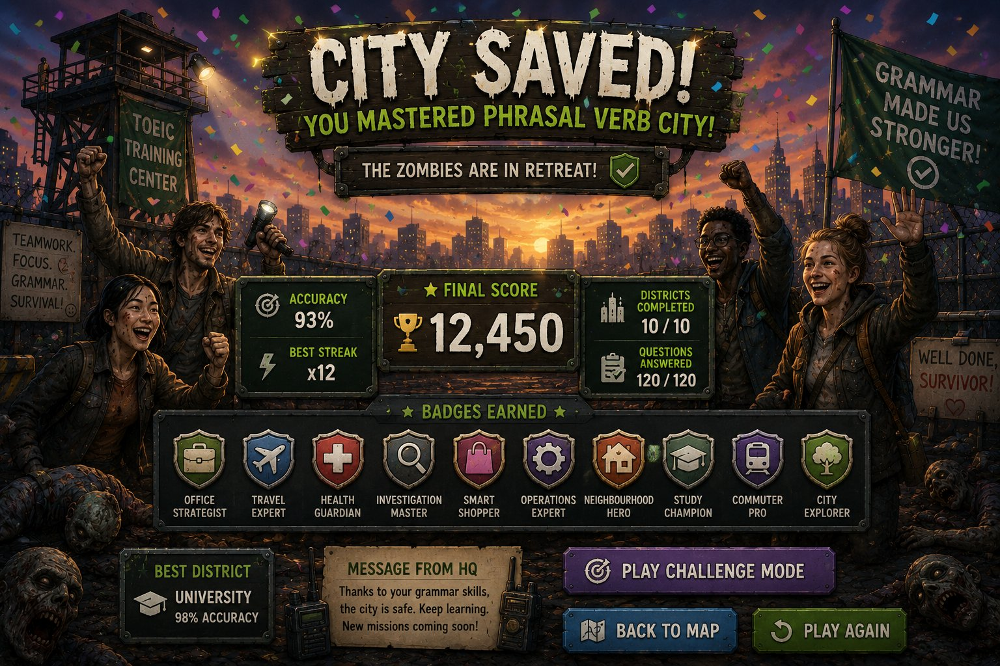
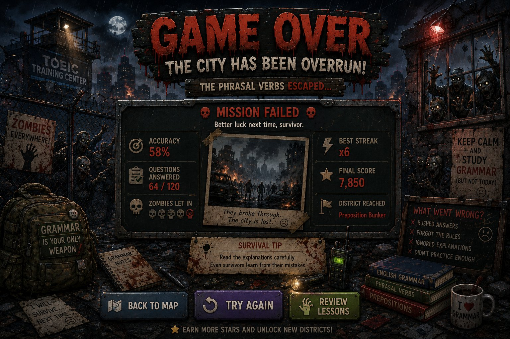

Homemade TOEIC Trainer · Mini-jeu
Zombie
Zombie
Grammar Survival
Your mission
- Answer questions — repousse les zombies avec la bonne préposition.
- Earn points — chaque bonne réponse renforce ta barricade.
- Survive — ne les laisse pas entrer !

Preposition Bunker
Choisis ta zone
Tiens la ligne. Maîtrise les prépositions. Termine une zone pour débloquer la suivante.
Survival Guide
How to Play
- Choisis une zone de grammaire (Time, Place, Movement, Work).
- Réponds correctement aux questions de prépositions.
- Une bonne réponse renforce la barricade (+5%) et te donne des points (+10).
- Une mauvaise réponse laisse les zombies approcher : −1 vie, barricade −20%.
- Besoin d'aide ? Utilise un indice (−2 points), mais avec parcimonie.
- 3 bonnes réponses d'affilée = Survivor streak ! (+5 points bonus).
- Termine les 4 zones (40 questions) pour sauver la ville !
Tu perds si tes vies tombent à 0 ou si la barricade atteint 0%.

Lives
Score0
Streakx0
💡 Indice :

The zombies are in retreat!
City Saved!
Tu as survécu à l'épidémie de grammaire et maîtrisé toutes les prépositions.

The zombies broke through
Game Over
La ville a été envahie… mais chaque survivant apprend de ses erreurs.
Phrasal Notebook · Review
Review Mistakes
Relis chaque erreur : ta réponse, la bonne réponse et la règle. C'est là qu'on progresse.